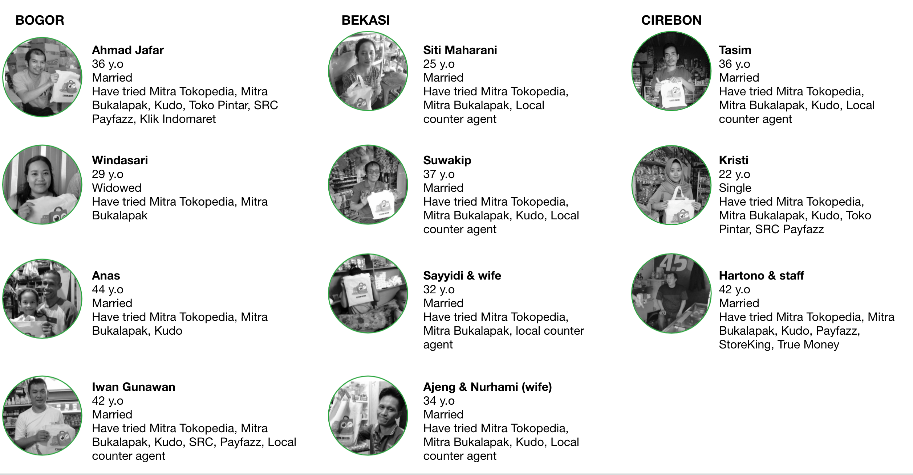
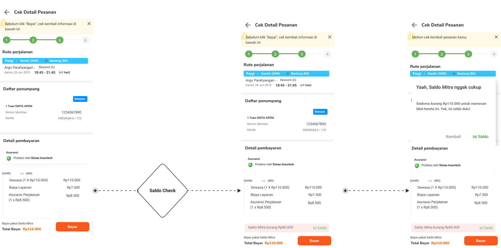
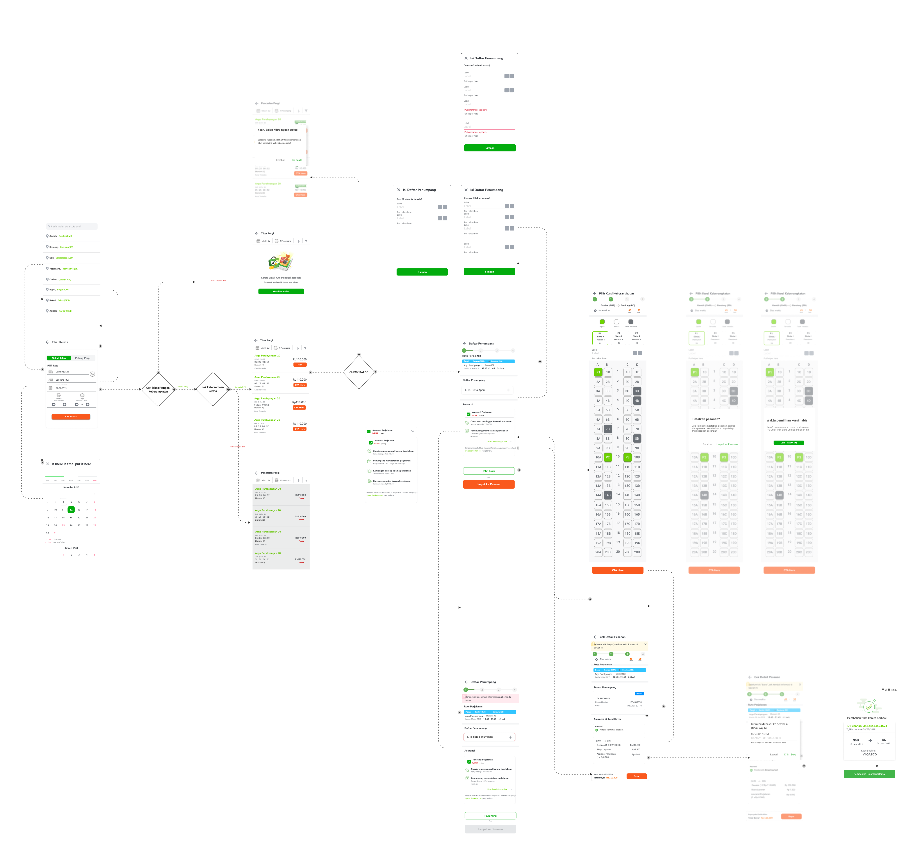
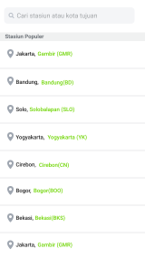
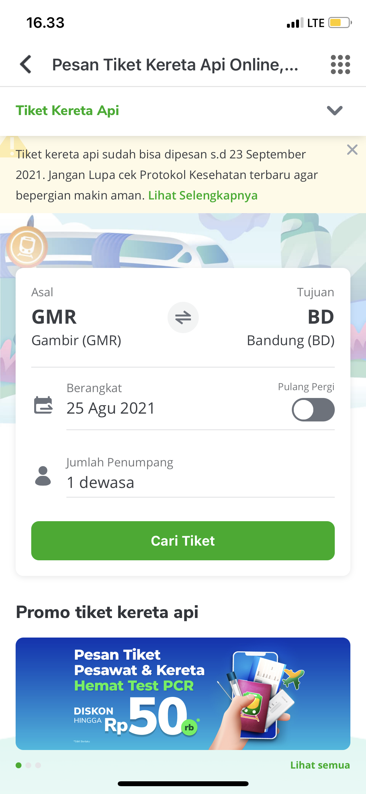
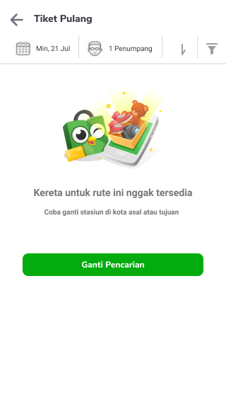
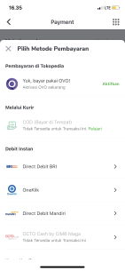
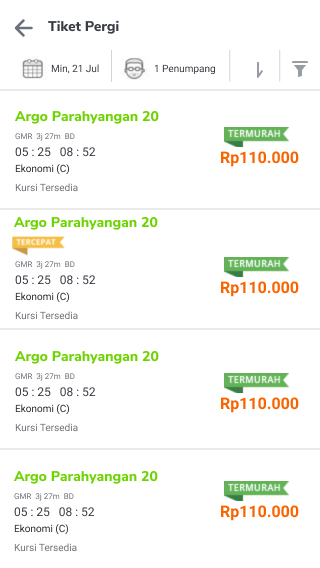
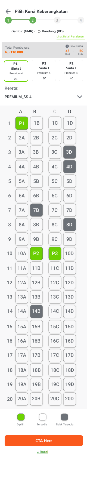

Train ticket reservation
for SME grocery stores.
A Mitra Tokopedia case study exploring how grocery stores can become a simple, trusted portal for Indonesian train ticket reservations during high-demand travel moments like Eid al-Fitr.
Product
Mitra Tokopedia Train
Platform
Mobile App
Method
Quant + Qual Research
Audience
Mitra grocery stores
Market Context
250M+
People living in Indonesia
Quant Phase
58
Mitra achieved from n:100 target
Task Result
5/5
Booked without issues
Flow Feedback
4/5
Felt the flow was simple enough
01 Overview
Why train tickets made sense inside a grocery-store partner app.
The Question
How can SME grocery stores provide train reservation for people? In Indonesia, trains are one of the most popular transportation choices, especially during Eid al-Fitr when many people travel back to their hometowns.
Hypothesis
01
Train is a favorite transportation mode, so grocery stores can help sell train tickets to local customers.
02
The flow needs to be straightforward, readable, and easy to complete across age groups.
03
A cleaner design can support a higher success rate for train reservation booking.
02 Process
Research plan, objectives, respondent criteria, and prioritization.
Research Plan
Stage 01Started with quantitative and qualitative methods to identify product backlog priority from Mitra's perspective and decide which backlogs needed deeper research.
Objectives
Stage 02Understand Mitra app usage and attitude, explore the experience of using Mitra Tokopedia, identify pain points and unmet needs, then evaluate the new backlog concept.
Respondent Criteria
Stage 03Approved Mitra Tokopedia users, recruited from the quantitative phase, active in the app, with at least five transactions, at least one transaction each month, and a minimum one month of membership.
Sampling
Stage 04Targeted three Mitra from each Sobat group, with n:100 target and n:58 achieved. The qualitative sample was n:11 across Bogor, Bekasi, and Cirebon.
03 Personas
Bogor · Bekasi · Cirebon
04 Research Findings
Narrative
We observed Mitra behavior across real booking contexts, then translated recurring friction into actionable design opportunities. The strongest pattern was not awareness, but completion: users knew the feature existed, yet still needed clearer guidance and lower cognitive load to finish a purchase confidently.
// 01
Less scrolling is better.
Too much scrolling irritates Mitra and makes important information harder to deliver.
// 02
Recognizable icons help discovery.
Unique icons that represent features are appealing and trigger Mitra to explore the feature.
// 03
Simple color combinations win.
White backgrounds with clear supporting colors make information easier to read.
// 04
Train booking fits seasonal demand.
During big holidays, customers ask about train schedules and availability.
// 05
Awareness does not guarantee first transaction.
High awareness still needs a clear flow, helpful content, and confidence-building interaction.
How Might We
HMW 01
How might we reduce scroll depth while keeping critical booking information visible and understandable?
HMW 02
How might we use familiar icons and labels to improve discoverability for first-time and low-confidence users?
HMW 03
How might we make the booking flow legible for different age groups without adding visual clutter?
HMW 04
How might we convert high seasonal awareness into successful first transactions at the point of payment?
05 Ideation
Narrative
We translated each "How Might We" into concrete design bets, then mapped them into user flow and wireflow artifacts. The team aligned on one principle: every step should reduce decision friction and move users forward with confidence, especially during high-pressure booking moments.
Design direction
- -> Make the train booking flow straightforward.
- -> Keep the design clean instead of overloading pages with content.
- -> Avoid small fonts and too many colors in high fidelity.
- -> Support passenger scenarios for children and babies.
- -> Add payment flexibility, including e-wallet options.
From Findings to Design Bets
Finding: Too much scrolling
Bet: Prioritize key booking controls above the fold and simplify page structure.
Finding: Icon-driven discovery
Bet: Use recognizable symbols with explicit labels to reduce ambiguity.
Finding: Readability issues
Bet: Increase typography clarity and keep a high-contrast visual system.
Finding: Awareness not conversion
Bet: Streamline checkout decisions and expand payment options to reduce drop-off.
User Flow · General

Wireflow

06 High Fidelity
Highlight only

Choose Destination

Review Booking

Empty Page

Payment Method

List of Train

Seat Page
The
Result.
"Users could buy tickets without specific issues. Clean design and readable text helped them identify the content and interactions needed to complete booking."
In task testing, 5 out of 5 users had no issue booking a train reservation, and 4 out of 5 felt the flow was simple enough.
Conclusion.
// 01
Think through real scenarios.
Passenger types, payment choices, low balance, unavailable trains, and seat expiry all shaped the flow.
// 02
Clarity is the feature.
Clean pages, readable text, and fewer competing elements made the booking path easier to finish.
// 03
Launch and measure.
The design worked well after launch and was measured through the analytical dashboard.